文字
背景
行間


カテゴリ:海外研修
オランダ海外研修３日目
体調不良者もなく、順調に日程を消化しています。３日目はアムステルダムで、アンネ・フランクの隠れ家を見学し、約２年間、計８人が息を潜めて暮らしていた空間を体験しました。また、ダム広場の王宮など市内を見学しました。午後は列車でウィンシュホーテンに移動し、いよいよ楽しみにしていたドラード・カレッジのホストファミリー宅での１週間が始まりました。
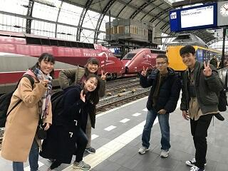
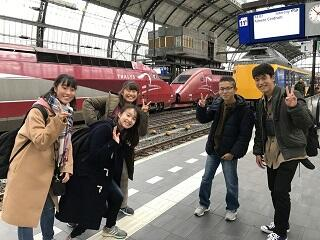
オランダ海外研修２日目
11月8日(金) ライデンにあるシーボルト博物館、ライデン大学、国立民族学博物館を訪問しました。シーボルト博物館、国立民族学博物館ではシーボルトが日本から持ち帰った多岐にわたる収集品などについて説明していただきました。また、ライデン大学では日本語、韓国語を学んでいる大学生と交流しました。よさこいを披露していただいたり、学内ツアーやパンケーキレストランでの昼食交流等、楽しいひとときを過ごしました。
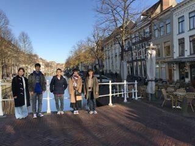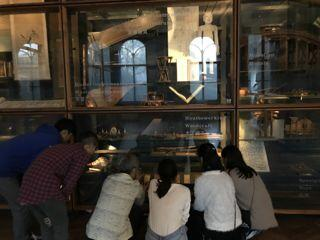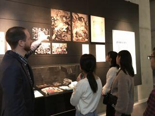
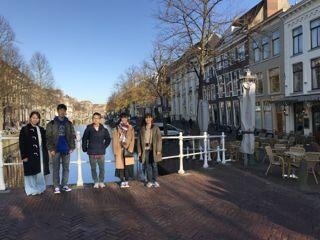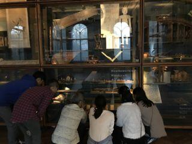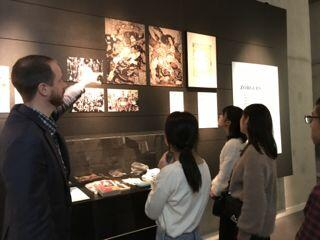
オランダ海外研修出発
11月7日,オランダ海外研修に１年生５名が出発いたしました。空港には鹿山会の福田様、長谷川様、谷藤様も見送りに来ていただき、激励の言葉をいただきました。オランダ派遣は平成９年から続く本校の伝統行事であり、欧州の高校生が集まるレベルの高いプログラムも用意されています。今年も大きな成果を上げて帰ってきてくれることを期待します。
SGHオーストラリア・シンガポール海外研修報告会
10月8日(火)６限 SGH海外研修（オーストラリア派遣・シンガポール派遣）及びトビタテ留学ＪＡＰＡＮによるイギリス研修参加生徒による報告会が、１年普通科、２年全員を対象に行われました。研修の概要、現地で行ったＳＧＨ課題研究発表といただいた助言、現地の高校生を対象にしたリサーチ結果や考察、高校生・大学生との交流など、充実した研修内容を伺わせる発表でした。
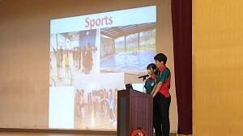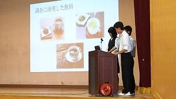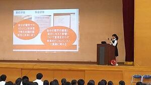
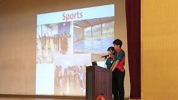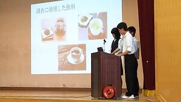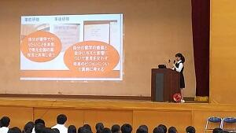
シンガポール海外研修帰国
9月21日午前８時、シンガポール海外研修を終えた生徒17名が無事に帰国いたしました。
帰りは慣れない機中泊を体験し、疲れた表情も見られましたが、代表生徒からは「充実した研修になりました」と力強い言葉が述べられました。３日間の強行スケジュールの中、慌ただしい日程をこなし、多文化に触れ、現地の方の貴重なご意見をいただいてきました。何よりも全員が体調を崩すことなく、楽しい時間を過ごせたということで、中身がぎっしりと凝縮された良い研修となりました。これから研修のまとめへと入り、全校生徒の前で成果を披露することになっています。
帰りは慣れない機中泊を体験し、疲れた表情も見られましたが、代表生徒からは「充実した研修になりました」と力強い言葉が述べられました。３日間の強行スケジュールの中、慌ただしい日程をこなし、多文化に触れ、現地の方の貴重なご意見をいただいてきました。何よりも全員が体調を崩すことなく、楽しい時間を過ごせたということで、中身がぎっしりと凝縮された良い研修となりました。これから研修のまとめへと入り、全校生徒の前で成果を披露することになっています。
シンガポール海外研修第３日
9月20日 研修３日目、この海外研修の最大の目的であるSt.Joseph's Institution での課題研究発表の日を迎えました。スライドでの発表が３組、ポスターでの発表が５組、堂々とプレゼンテーションを行うことができました。現地の方に直接貴重な意見を聴くことができ、有意義な発表会となりました。残された時間はインド人街やアラブ人街を訪問し異文化を体験しました。最後はナイトサファリを見学し、帰国の途につきます。
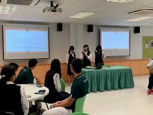
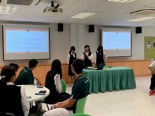
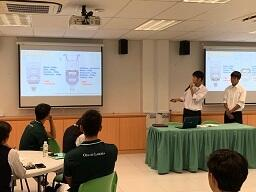
シンガポール海外研修第２日
シンガポールの街歩きは、多文化共生要素が凝縮です。どんなルーツ、どんな価値観を持つ人でも違和感なく溶け込むことができます。シンガポール研修２日目も、それを実感する１日でした。９月１９日（木）午前、日本の地方自治体の窓口機関クレアで、各自の研究のプレゼンテーションを行ないました。シンガポール視点からの助言をいただき、たいへん参考になりました。午後は国立博物館でシンガポール文化を学習しました。夕方はマーライオンパーク、チャイナタウンと有名スポットを巡り、今日も駆け足で１日が過ぎました。
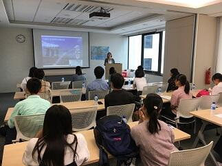
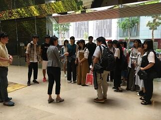
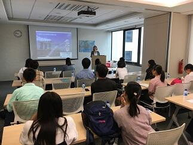
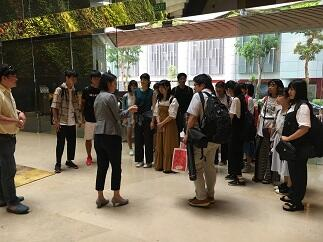
シンガポール海外研修第１日
現地時間16:00チャンギ国際空港に予定どおり到着。ホテルにチェックイン後、全員元気に異文化体験に出発しました。ヒンドュー教の寺院や中国系の仏教寺院、マーケットなどを見学しました。夕食はホーカーズと呼ばれる屋台村で、地元の料理を食べました。食後は地下鉄で、マリーナベイエリアを訪れ、美しい夜景の中を散策しました。最後は有名なマリーナ・ベイ・サンズ・ホテルの展望台に上り、充実した１日になりました。
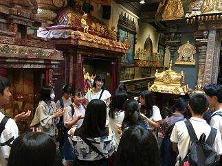
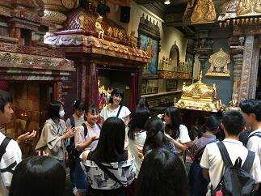
シンガポール海外研修出発
9月18日、ＳＧＨシンガポール海外研修の生徒17名が羽田空港より無事に出発いたしました。午前7時15分という早朝の集合時間にもかかわらず、全員が時間どおりに集合し、決意を新たに出発いたしました。課題研究の準備は万全です。成果を上げて帰ってきてくれることを期待します。
オーストラリア海外研修帰国
８月３日（土）２週間の海外研修を終えた２０名の生徒が無事に帰国しました。少し疲れている様子も見られましたが、その表情からは心地よい疲労感が漂っているようでした。これから研修のまとめへと入り、秋に全校生徒への報告会も予定されています。